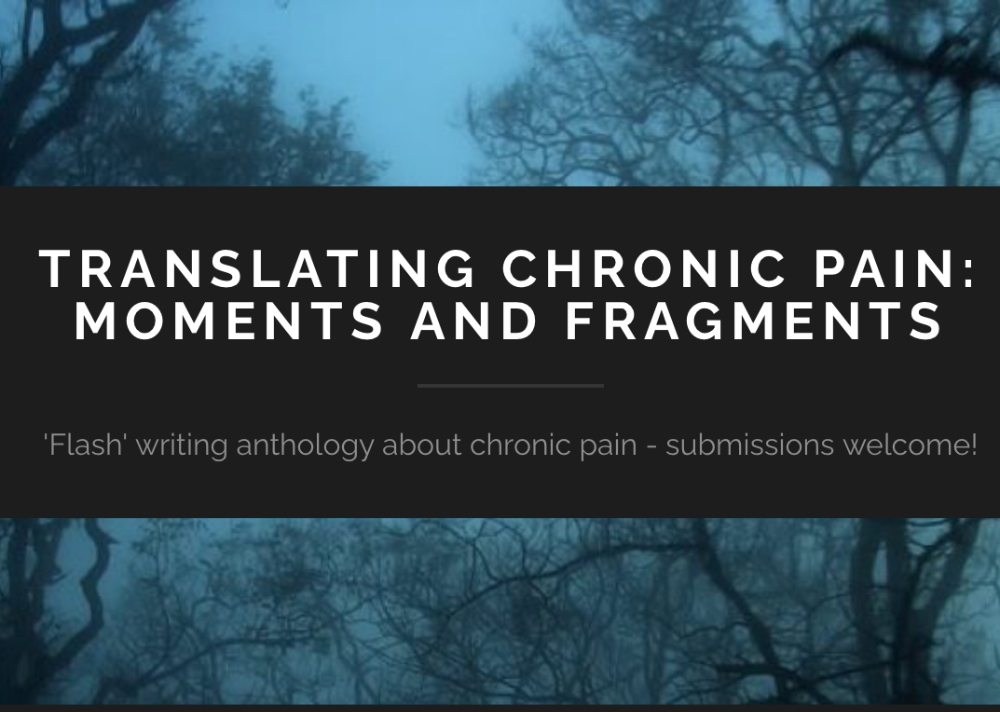

I am (ADD EXPERIENCED TUTOR DESC re tutoring all levels of English with particular speciality in GCSE
(paste the super prof text) .
I welcome queries from parents interested in sup ….

English Language tutoring
I am a CELTA-qualified English language teacher .. (add specifics re language teaching intermediate learners and those seeking to maximise fluency)


Qualificafions
- Ph.D. in English Literature. Cornell University M.A. in English Literature with Distinction, Cornell University
- M.A. in Literature, Culture, and Modernity with Distinction, Queen Mary, University of London B.A. (Hons) in English with Distinction, Rhodes University, South Africa
- P.G.Cert.A.P. Postgraduate Certificate in Academic Practice (Teaching in Higher Education) Open University
- SEDA Mentoring and Coaching Award, September 2012, Edinburgh Napier University
This site is currently under adventurous construction. Please check back soon for a full digital sanctuary of my work.